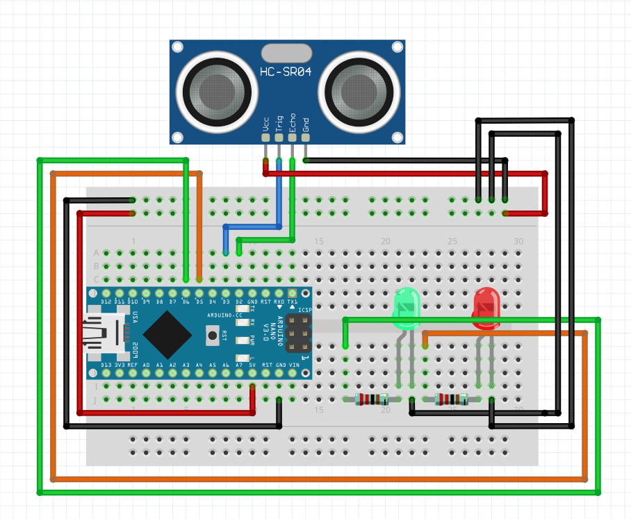

Неболшой гайдик по сонару
Сонар это ультразвуковой дальномер который используется для измерения расстояния до объекта.
Как его завести на ардуино
Для тестировки соберём простейшую схему на ардуино нано
Эта схема работает так: Если расстояние от объекта до сонара меньше 10см то загорается красный светодиод, а если больше то зеленый
С этим кодом и семой у вас заработает сонар, дальше только вы решаете что с ним сделать. Удачных проектов!
Удачных проектов! Если остались вопросы пишите в сообщения телеграм канала или в дс сервер по кнопкам ниже: